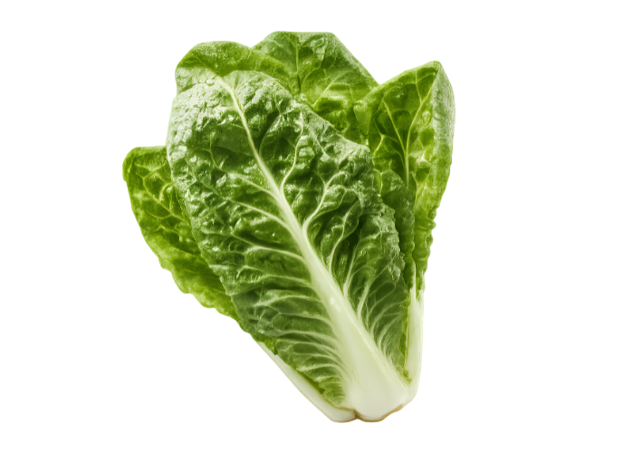
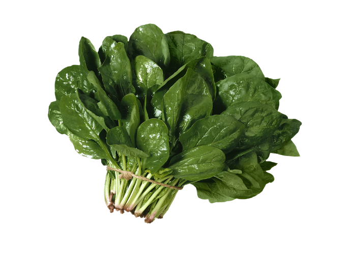
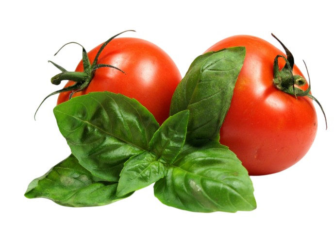

GO GREEN
Premium Experience
Recipes and a weekly menu built from what you grow, plus direct support for your solar hydroponic system.
Recipes from your harvest
Each recipe uses crops available in the HYDRONEXIS Marketplace.

Fresh garden salad
Salad · 10 minutes · 2 servings
Ingredients
- 1 head of romaine or butterhead lettuce
- 2 tomatoes, cut in wedges
- 4 radishes, thinly sliced
- 1 tablespoon chopped chives
- 2 tablespoons olive oil and the juice of 1 lime
Steps
- Rinse the leaves in cold water and dry them well.
- Tear the lettuce into a bowl and add tomato and radish.
- Whisk oil, lime juice and a pinch of salt, pour over and top with chives.

Spinach and pepper sauté
Side dish · 15 minutes · 2 servings
Ingredients
- 2 cups of fresh spinach
- 1 red and 1 yellow bell pepper, in strips
- 1 garlic clove, minced
- 1 tablespoon olive oil
Steps
- Heat the oil in a pan over medium heat and cook the garlic for 30 seconds.
- Add the peppers and cook for 5 minutes until soft.
- Add the spinach, stir until it wilts and season with salt.

Tomato and chive salsa
Snack · 10 minutes · 4 servings
Ingredients
- 4 ripe tomatoes, diced
- 1 green bell pepper, diced
- 2 tablespoons chopped chives
- Juice of 1 lime and a pinch of salt
Steps
- Combine tomato, pepper and chives in a bowl.
- Add lime juice and salt, mix and rest for 10 minutes before serving.
A simple plan to use your harvest during the week. Find each crop in the Marketplace.
Support for your system
Personalized mentoring
Ask the HYDRONEXIS team about pH, nutrients, pests or what to plant next.
Request mentoring
Setup & maintenance
Schedule an installation or a maintenance visit for your solar hydroponic system.
Request a visit